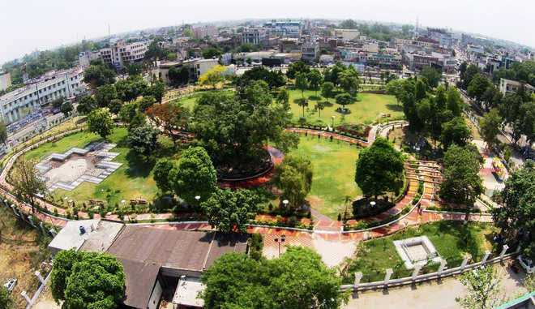

Amritsar, colloquially known as Ambarsar, is a city steeped in history and spirituality. It stands as a prominent cultural and religious hub in the heart of Punjab, as the second largest city of India.
Situated on the banks of river Sutlej, Ludhiana, Punjab’s largest city, is one of the biggest manufacturing hubs in India. Also known as Manchester of India, Ludhiana is famous for its hosiery industries, the ancient ruins of the Lodi dynasty and the war museum.

The city of Jalandhar is the true personification of the rich heritage and history of Punjab - a culmination of the old and the new. This historic city was a part of the illustrious Indus Valley Civilisation.
Pathankot is a city located in Punjab, bordered by Pakistan on the west in the foothills of Kangra and Dalhousie. With the river Chakki passing by, Pathankot is located at the meeting point of Jammu & Kashmir, Punjab and Himachal Pradesh.

The Qila Raipur Sports Festival, also known as the Rural Olympics, is one of India’s most unique and thrilling sporting events, held annually in the Qila Raipur village of Punjab.
The Partition Museum is a public museum located in the town hall of Amritsar, Punjab, India.[1] The museum aims to become the central repository of stories, materials, and documents related to the post-partition riots that followed the division of British India into two independent dominions.
Jallianwala Bagh is a historic garden and memorial in Amritsar, Punjab, India, commemorating the 1919 massacre where British troops fired on a peaceful crowd, resulting in numerous deaths and injuries.
The Ram Tirath Temple in Amritsar, also known as Bhagwan Valmiki Tirath Sthal, is a significant pilgrimage site believed to be the ashram of Sage Valmiki and the birthplace of Luv and Kush, the sons of Lord Rama, and Sita.

Building the Pushpa Gujral Science City – Issues and ...Pushpa Gujral Science City, located on the outskirts of Kapurthala on the Kapurthala-Jalandhar road, is a 72-acre educational and entertainment complex designed to promote scientific awareness and engagement through interactive exhibits and immersive experiences.
Dera Baba Jaimal Singh Ji, the headquarters of Radha Soami Satsang Beas (RSSB), is a spiritual center and mini-township located on the banks of the Beas River, near Amritsar, India, known for its peaceful atmosphere, lush greenery, and large gatherings for spiritual discourses.

Virasat-e-Khalsa, formerly known as the Khalsa Heritage Memorial Complex, is a museum in Anandpur Sahib, Punjab, India, designed by Moshe Safdie, that showcases the rich history and culture of Sikhism and the Khalsa Panth, commemorating the 300th anniversary of the Khalsa and 500 years of Sikh history.

Gobindgarh Fort, a 43-acre heritage site in Amritsar, Punjab, India, is a historic military fortress showcasing the region's rich history, including the rise and fall of the Sikh Empire and the impact of British colonial rule.